Membangun Ketahanan Iklim
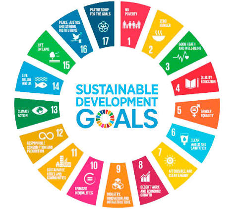
17 tujuan dan 169 target untuk mengakhiri kemiskinan, melindungi lingkungan, dan mewujudkan kesejahteraan yang adil bagi semua orang, meneruskan Millennium Development Goals (MDGs)
Sejak dahulu, makhluk hidup telah tinggal di Bumi dengan memanfaatkan sumber dayanya dan saling melengkapi satu sama lain. Maupun flora, fauna, atau manusia, semuanya berada di satu rumah dan lingkungan. Melalui perkembangan zaman, manusia dapat menciptakan berbagai inovasi yang memudahkan kehidupan di Bumi. Tetapi, hal itu tidak terlepas dari ragam tantangan dalam bidang sosial, ekonomi, lingkungan, dan politik. Oleh karena itu, seluruh negara-negara di dunia bersatu untuk memenuhi SDGs sebagai bagian dari Agenda 2030. Digagaskan pada 2015, SDGs merupakan 17 tujuan global dan 169 target yang ditetapkan oleh PBB dengan prinsip “no one left behind.” Setelah SDGs diwujudkan, diharapkan bahwa dunia akan berada di kondisi yang lebih aman dan nyaman, serta mempunyai pembangunan yang maju dengan alam yang lestari dan sumber daya yang mencukupi kebutuhan generasi kini maupun generasi mendatang.
SDGs mempunyai visi untuk menciptakan sebuah dunia yang adil, sejahtera, damai, dan berkelanjutan. Ia merupakan panggilan bagi setiap individu untuk mengingat tanggung jawabnya sebagai anggota masyarakat dan penghuni Bumi untuk ikut dalam pembangunan demi masa depan yang lebih baik. Maka, kita semua mempunyai peran dalam mendukung SDGs. Sekecil apapun, satu aksi penting dan dapat berpengaruh besar. Web ini sendiri dibuat untuk mendorong keberhasilan SDGs, dengan tujuan untuk memberi manfaat dan pengetahuan baru bagi pengunjung website sehingga ingin ikut berkontribusi.
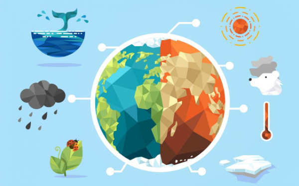
Perubahan iklim sudah menjadi masalah global yang harus segera dihentikan demi keselamatan Bumi dan makhluk hidup yang tinggal di dalamnya.
Sebagai bentuk kepedulian terhadap peningkatan rata-rata suhu global yang mencapai 1.5-1.6 derajat Celsius pada tahun 2026, web ini fokus terhadap SDG 13, yakni Penanganan Perubahan Iklim. Tepatnya, web ini mengambil tema “Building Climate Resilience” yang berarti pembangunan ketahanan iklim yang sesuai dengan SDG 13 untuk penanganan perubahan iklim. Penanganan perubahan iklim penting demi menjaga kesehatan Bumi dan alamnya, sehingga ekosistem dan sumber dayanya tetap lestari. Jika tidak dihentikan, perubahan iklim bisa menyebabkan kepunahan berbagai flora dan fauna akibat dari kerusakan lingkungan beserta habisnya sumber daya tidak terbarukan. Manusia juga akan terdampak dengan suhu panas yang ekstrem dan rawan banjir. Dengan web ini, diharapkan bahwa pengunjung website lebih memahami kepentingan SDG 13 dan ikut mendukung pelaksanaannya. Marilah kita menjaga dan merawat Bumi kita!
Apa itu SDGs?
Sustainable Development Goals (SDGs) atau Tujuan Pembangunan Berkelanjutan bermula dari komitmen global pada KTT Bumi Rio de Janeiro tahun 1992 yang menghasilkan Agenda 21 mengenai keselarasan pembangunan dan lingkungan. Lalu, terjadi pengesahan Millennium Development Goals (MDGs) periode 2000–2015 yang memiliki delapan tujuan untuk mengatasi kemiskinan di negara berkembang. Namun, MDGs dianggap kurang menyentuh aspek lingkungan dan ketimpangan secara menyeluruh karena fokusnya terhadap negara berkembang. Maka, negara-negara anggota PBB dalam Konferensi Rio+20 pada Juni 2012 mengusulkan kerangka baru yang lebih inklusif, sehingga permasalahan global dapat diselesaikan secara bersama-sama. Akhirnya, pada 25 September 2015 di Markas Besar PBB, New York, sekitar 193 negara secara resmi mengesahkan Agenda 2030 untuk SDGs yang memuat 17 tujuan dan 169 target universal bagi seluruh negara maju maupun berkembang.
Pilar SDGs
1. Pilar Sosial: Fokus terhadap kesejahteraan manusia, kesetaraan, dan keadilan sosial yang mencakup pengentasan kemiskinan dan kelaparan, kesehatan, pendidikan berkualitas, serta kesetaraan gender.
2.Pilar Ekonomi: Fokus pada pertumbuhan ekonomi yang inklusif dan berkelanjutan yang mencakup pekerjaan layak, energi bersih dan terjangkau, inovasi serta infrastruktur, dan pengurangan kesenjangan ekonomi.
3.Pilar Lingkungan: Fokus pada pelestarian alam, pengelolaan sumber daya, dan daya dukung ekosistem yang mencakup air bersih dan sanitasi, kota berkelanjutan, konsumsi dan produksi bertanggung jawab, penanganan perubahan iklim, serta ekosistem laut dan darat.
17 Tujuan SDGs
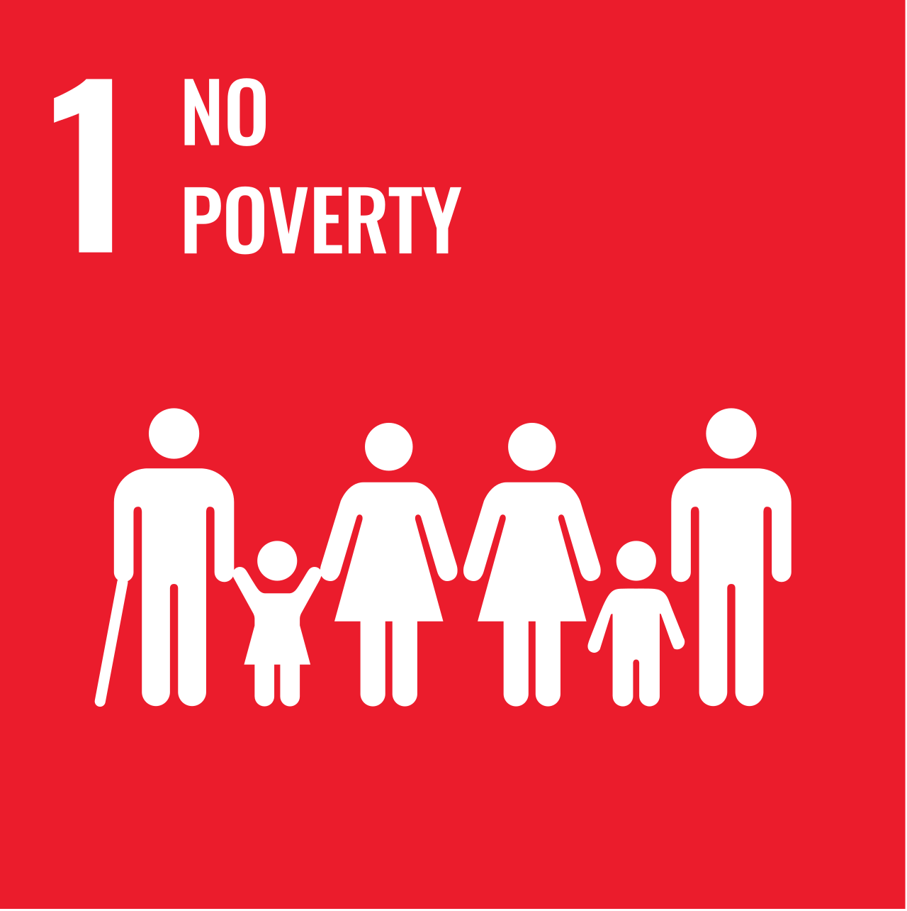
Mengakhiri kemiskinan dalam segala bentuk di seluruh dunia. Fokusnya adalah memberdayakan semua individu yang hidup dalam kondisi rentan.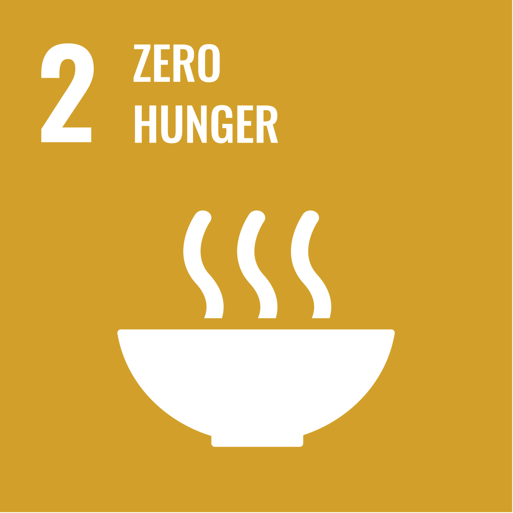
Mengakhiri kelaparan, mendorong pertanian berkelanjutan, dan mencapai ketahanan pangan. Fokusnya adalah ketersediaan makanan yang sehat dan cukup bagi semua orang. Menjamin kehidupan sehat dan kesejahteraan untuk semua. Fokusnya adalah penguatan sistem kesehatan, penurunan angka kematian, pengendalian penyebaran penyakit, serta akses pelayanan kesehatan terjangkau.
Menjamin kehidupan sehat dan kesejahteraan untuk semua. Fokusnya adalah penguatan sistem kesehatan, penurunan angka kematian, pengendalian penyebaran penyakit, serta akses pelayanan kesehatan terjangkau.
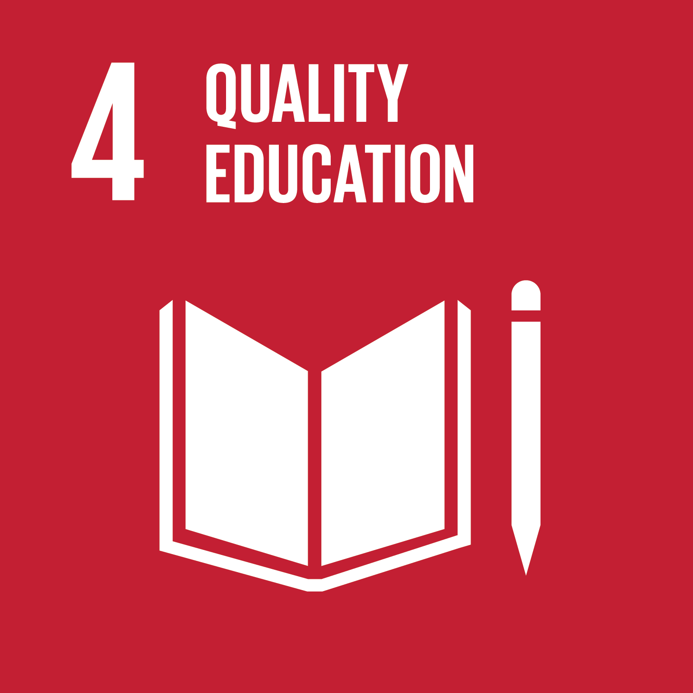
Menjamin pendidikan yang inklusif, merata, dan bermutu. Fokusnya adalah upaya peningkatan kualitas dan penjaminan mutu pendidikan hingga pemberdayaan tenaga pengajar.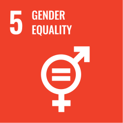
Mencapai kesetaraan gender. Fokusnya adalah penghapusan diskriminasi dan kekerasan berbasis gender serta memastikan akses pendidikan, pekerjaan, dan kesempatan yang sama.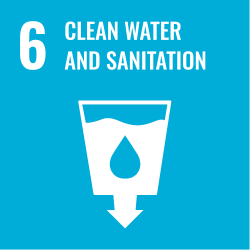
Menjamin akses air bersih dan sanitasi yang berkelanjutan. Fokusnya adalah pengelolaan air berkelanjutan, pengendalian polusi air, dan mencapai lingkungan yang bersih dan sehat. Menjamin akses energi modern, andal, dan berkelanjutan. Fokusnya adalah pemerataan penggunaan energi terbarukan dan efisiensi energi.
Menjamin akses energi modern, andal, dan berkelanjutan. Fokusnya adalah pemerataan penggunaan energi terbarukan dan efisiensi energi.
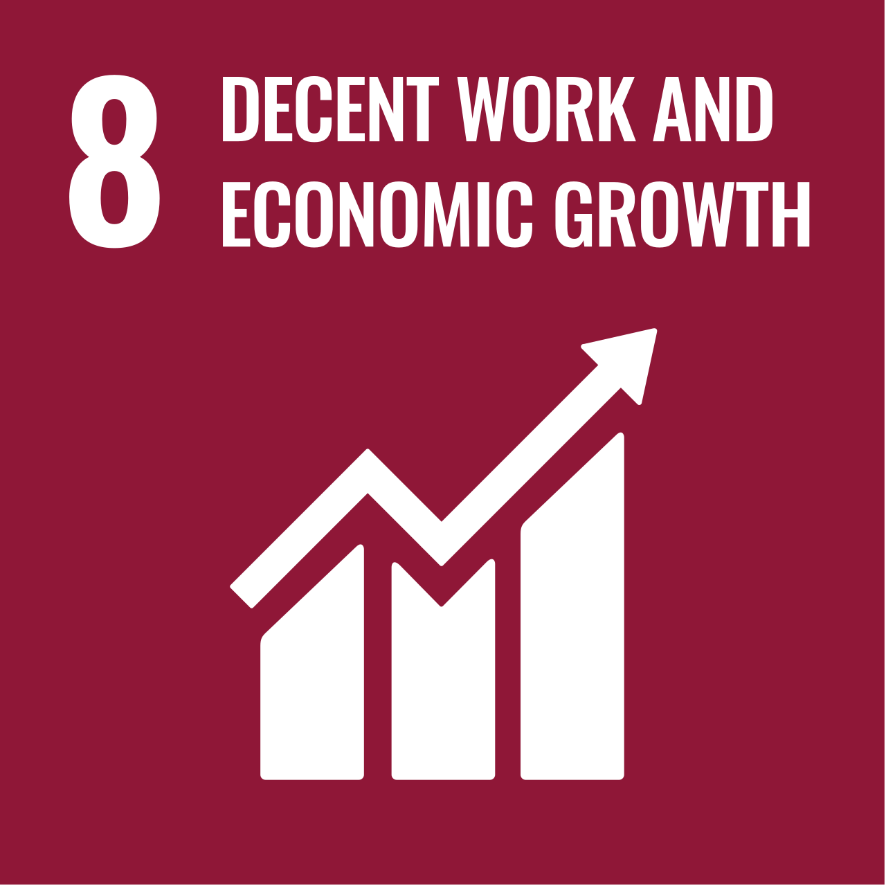
Mendorong pertumbuhan ekonomi inklusif dan pekerjaan yang layak. Fokusnya adalah kesempatan kerja yang adil.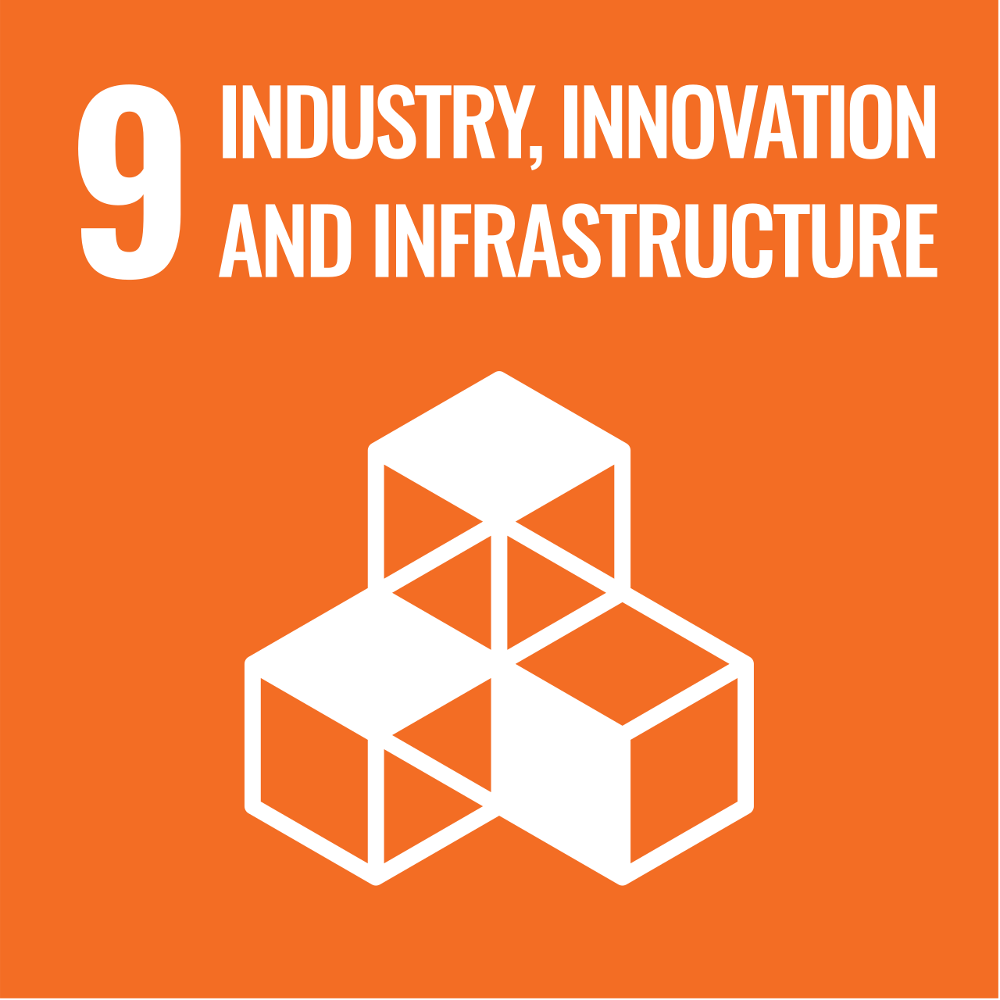
Membangun infrastruktur yang kokoh, meningkatkan industrialisasi inklusif dan berkelanjutan, serta mendorong perkembangan inovasi.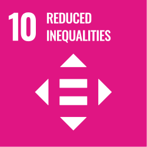
Mengurangi kesenjangan di dalam dan antarnegara. Fokusnya adalah pemberdayaan kelompok-kelompok yang rentan dan pengurangan ketidaksetaraan dalam pendapatan.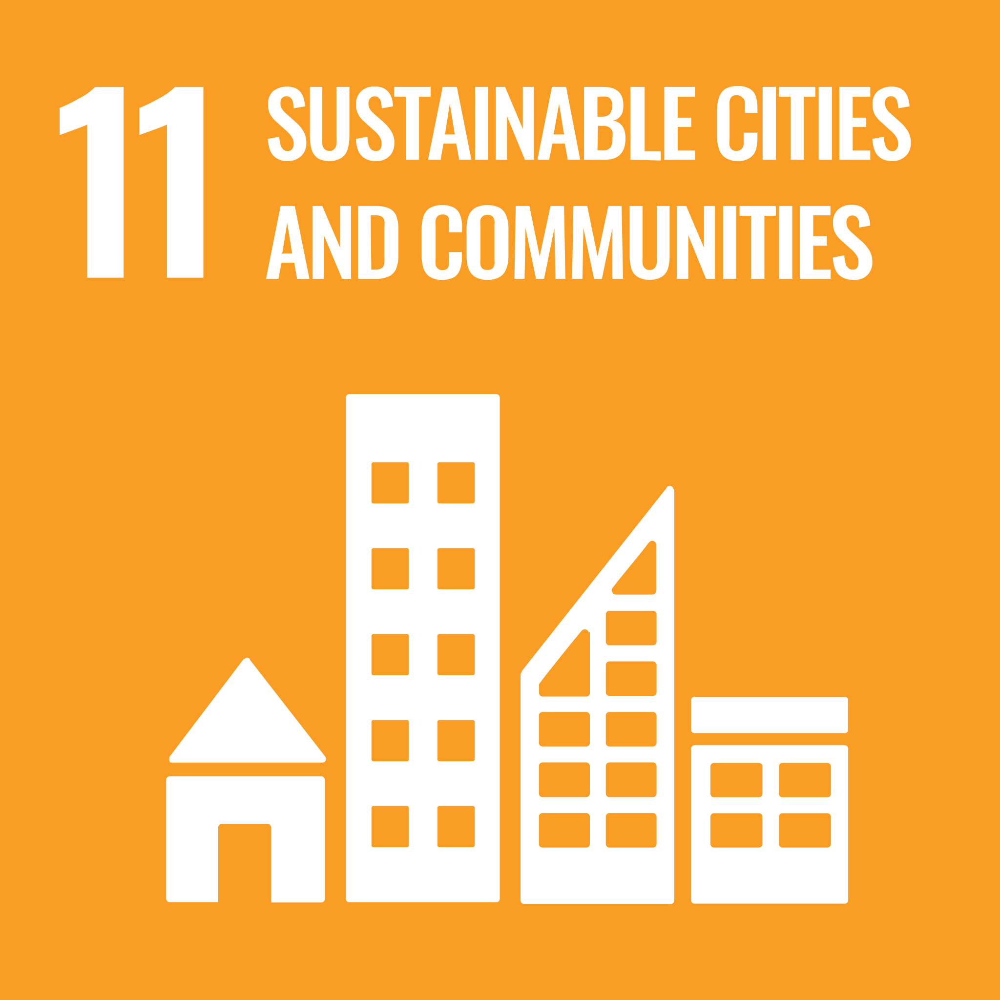
Mewujudkan kota yang inklusif, aman, dan tangguh. Fokusnya adalah perencanaan kota yang baik dan penjaminan akses terhadap transportasi umum. Menjamin pola konsumsi dan produksi berkelanjutan. Fokusnya adalah efisiensi sumber daya, pengelolaan limbah, dan pengembangan produk ramah lingkungan.
Menjamin pola konsumsi dan produksi berkelanjutan. Fokusnya adalah efisiensi sumber daya, pengelolaan limbah, dan pengembangan produk ramah lingkungan.
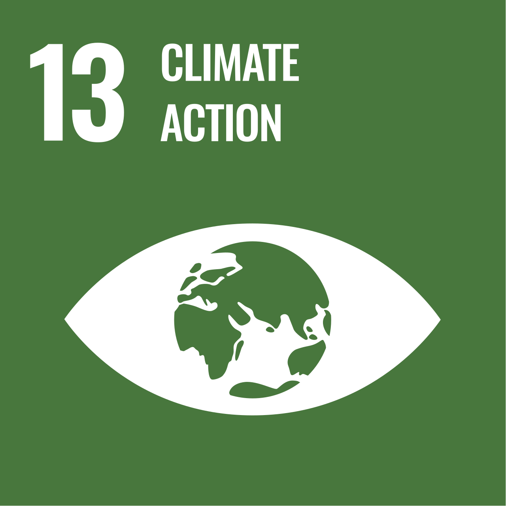
Mengambil aksi cepat untuk menangani perubahan iklim dan dampaknya. Fokusnya adalah pengurangan emisi gas rumah kaca, adaptasi terhadap perubahan iklim, dan mitigasi bencana alam.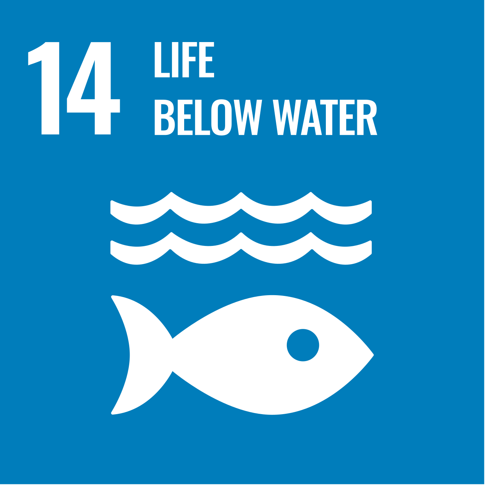
Melestarikan dan memanfaatkan sumber daya laut secara berkelanjutan. Fokusnya adalah pelestarian ekosistem laut, pemanfaatan sumber daya, pengurangan limbah plastik, serta pengendalian perikanan.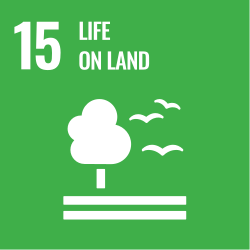
Melindungi dan memulihkan ekosistem daratan. Fokusnya adalah pengelolaan hutan secara tepat serta penjagaan biodiversitas. Mendorong masyarakat damai, akses keadilan, dan lembaga yang akuntabel. Fokusnya adalah sistem hukum yang adil dan pemberantasan korupsi.
Mendorong masyarakat damai, akses keadilan, dan lembaga yang akuntabel. Fokusnya adalah sistem hukum yang adil dan pemberantasan korupsi.
 Menguatkan kemitraan untuk pembangunan berkelanjutan. Fokusnya adalah pengembangan kapasitas, transfer teknologi, dan dukungan keuangan.
Menguatkan kemitraan untuk pembangunan berkelanjutan. Fokusnya adalah pengembangan kapasitas, transfer teknologi, dan dukungan keuangan.